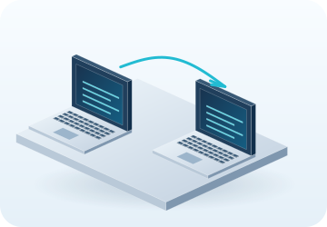
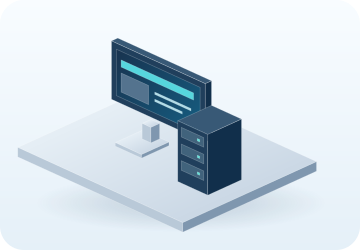

1. Décrivez le problème
Précisez votre localité, la marque et le modèle de l’appareil, les symptômes et leur apparition. Signalez les fichiers importants avant toute intervention.


La technologie, avec un accompagnement de proximité
Nous évaluons les pannes, lenteurs et dysfonctionnements ; réparons et entretenons les ordinateurs portables et fixes ; installons des SSD et de la mémoire compatibles ; et configurons systèmes, logiciels, imprimantes et réseaux. Nous aidons aussi à protéger et organiser les fichiers, migrer les données et étudier leur récupération, sans garantir des résultats qui dépendent de l’état des supports. Pour les entreprises locales, nous proposons des sites web, l’hébergement, un certificat SSL et la maintenance, selon le périmètre défini dans la proposition.
Zones d’intervention : Cascais, Estoril, Parede, Carcavelos, Alcabideche, Manique, Tires, São Domingos de Rana, Sintra, Oeiras, Carnaxide, Algés et Lisboa. Les déplacements sont planifiés et confirmés à l’avance. En dehors de ces secteurs, nous évaluons la possibilité d’une assistance à distance.
Demander une évaluation
Services informatiques
Découvrez les interventions possibles pour votre ordinateur ou votre réseau. L’assistance à domicile, de Cascais à Lisbonne, et les sessions à distance sont convenues à l’avance.

Nous évaluons les pannes de démarrage, blocages, lenteurs, problèmes de charge et dysfonctionnements. L’intervention dépend du modèle et de l’état de l’appareil.
Les pièces et leur disponibilité dépendent du modèle et du diagnostic. Les interventions avancées sont évaluées au cas par cas.
Demander un devis
Nous intervenons sur les ordinateurs de bureau et aidons à définir une configuration adaptée au travail, aux études ou à la maison.
Le choix des composants dépend de la compatibilité, de l’état de l’appareil et de l’accord sur le devis.
Demander un devis
Nous aidons à organiser le réseau et à améliorer la couverture sans fil des logements et petits bureaux. Nous évaluons les lieux, les équipements et les symptômes avant de proposer des changements.
La couverture et le débit dépendent aussi des lieux, des appareils et du fournisseur d’accès.
Demander un devis
Nous configurons les systèmes et applications pour une utilisation organisée. Avant toute réinstallation ou tout formatage, nous convenons du traitement des fichiers existants.
Les licences, abonnements et sauvegardes sont précisés dans le devis. N’indiquez pas de mots de passe dans le formulaire.
Demander un devis
Nous aidons à identifier les logiciels indésirables et à établir des routines de protection des fichiers adaptées à l’utilisation de l’appareil.
Aucune solution ne garantit une protection absolue ni la récupération de tous les fichiers. Les sauvegardes doivent être vérifiées régulièrement.
Demander un devis
Nous aidons à transférer les fichiers et à résoudre les problèmes pouvant être traités à distance. En cas de perte de données, nous évaluons d’abord la situation.
La récupération des données n’est pas garantie. L’accès à distance nécessite un accord et ne remplace pas les interventions physiques nécessaires.
Demander un devis
Des sites rapides pour les entreprises locales, avec hébergement, certificat SSL et maintenance inclus dans un forfait mensuel. Un accompagnement technique pour le bon fonctionnement de votre site.
Les contenus, modifications, nom de domaine et conditions du forfait sont précisés dans le devis. Aucun tarif mensuel n’est indiqué sur cette page.
Demander une proposition →Indiquez la marque, le modèle, le problème et votre localité. L’évaluation, les éventuels frais de diagnostic ou de déplacement et les conditions sont convenus avant l’intervention. Les composants, licences et services supplémentaires dépendent du devis accepté.
Précisez votre localité, la marque et le modèle de l’appareil, les symptômes et leur apparition. Signalez les fichiers importants avant toute intervention.
Nous évaluons si une visite ou une assistance à distance convient et précisons le rendez-vous et les conditions applicables avant d’intervenir.
Nous expliquons les options et le périmètre du travail. Réparations, pièces, mises à niveau et services supplémentaires dépendent de l’évaluation et de votre accord.